परिचय • Introduction
श्री हरबंश सिंह जी का जन्म 15 जुलाई 1945 को हुआ था। वह लोकतंत्र की रक्षा के लिए किए गए संघर्षों में एक अग्रणी सेनानी थे।
Shri Harbansh Singh Ji was born on 15 July 1945. He was a fearless activist and Loktantra Rakshak Senani who fought bravely during the Emergency and numerous people’s movements across India.
जीवन यात्रा • Life Journey
- 1. नाबालिग अवस्था में भारत बंद आंदोलन में भाग लिया और 1 महीने जेल में रहे।
Participated in the Bharat Bandh movement as a minor and was jailed for one month. - 2. 1974 में श्री जगजीवन बाबू के खिलाफ हेलीकॉप्टर विरोध प्रदर्शन किया, भागना पड़ा और जेल जाना पड़ा।
Protested against Jagjivan Babu's helicopter landing in 1974; was arrested and had to flee. - 3. ऑल इंडिया रेलवे स्ट्राइक में हिस्सा लिया, एक महीने सोलिटरी बैरक में रहे।
Participated in the All India Railway Strike under George Fernandes, spent one month in solitary jail. - 4. आपातकाल के दौरान 18 महीने जेल में बंद रहे और मानसिक व शारीरिक यातनाएं झेलीं।
Detained during the Emergency (1975–77) for 18 months, faced intense torture and isolation. - 5. रेलवे गैंगमैन कर्मचारियों की लड़ाई में 128 रेलवे एक्ट के तहत 3 महीने जेल।
Fought for railway gangman rights, jailed under Section 128 for 3 months. - 6. रामनगर पीपा पुल टोल माफ करने के आंदोलन में 11 महीने जेल में रहे।
Led the protest to waive toll at Ramnagar bridge, jailed for 11 months. - 7. रामनगर शंकर हत्याकांड में गिरफ्तारी की मांग पर जेल गए।
Jailed during protests demanding arrests in the Ramnagar Shankar murder case. - 8. पुलिस परिषद आंदोलन में महीनों जेल में रहे, एक पुलिस जवान ने भी गिरफ्तारी दी।
Spent months in jail during the Police Parishad protest; even a police constable joined him. - 9. पड़ाव कांड में जनता पार्टी सरकार में गिरफ्तारी व लाठीचार्ज का सामना किया।
Faced arrest and brutal lathi charge during the Padav incident even under Janata Party rule. - 10. चन्धासी मंडी छापे का विरोध किया, हफ्तों मंडी बंद रखी।
Opposed raid at Chandasi Mandi, kept the mandi shut for weeks in protest. - 11. 1985 में छात्र आंदोलन में लाठीचार्ज हुआ, 4 दिन जेल में रहे।
Lathi-charged and jailed for 4 days during a student protest in 1985. - 12. बसंत पेपर मिल आंदोलन में बेरोजगारों के हक में प्रदर्शन किया और गिरफ्तार हुए।
Protested for unemployed at Basant Paper Mill and was arrested. - 13. इंदिरा गांधी को काला झंडा दिखाने के कारण गिरफ्तार हुए।
Arrested for showing a black flag to Indira Gandhi, jailed in Ramnagar. - 14. रामविलास पासवान जी के साथ मुंबई बंदरगाह पर विदेशी गेहूं का विरोध किया, दोनों गिरफ्तार हुए।
With Ram Vilas Paswan, protested imported wheat at Mumbai port; both arrested. - 15. मिर्जापुर आंदोलन में पुलिस लाठीचार्ज और गिरफ्तारी हुई।
Faced lathi charge and arrest during Mirzapur agitation. - 16. मुगलसराय फायर ब्रिगेड कांड में पुलिस द्वारा “जिंदा या मुर्दा” पकड़ने का आदेश, गिरफ्तारी हुई।
Declared wanted dead or alive in the Mughalsarai fire brigade incident; eventually jailed. - 17. यातनाओं में पुलिस ने पैर और हाथ में किल्ली ठोकी, नाखून उखाड़े।
Suffered extreme police brutality — nails were removed, limbs injured with iron nails. - 18. चन्धासी मंडी में 700% टैक्स विरोध में 22 दिन मंडी बंद रखी, 14 दिन जेल में रहे।
Led protest against 700% tax in Chandasi coal market; 22 days closure, jailed for 14 days. - 19. कुल 23 बार महीनों की अवधि तक जेल में रहे।
Jailed more than 23 times for extended durations. - 20. सैकड़ों छोटे आंदोलनों में 1–2 दिन की जेल हुई।
Over 100+ small protests resulted in 1–2 day imprisonments. - 21. इन आंदोलनों में पूर्व विधायक यदुनाथ सिंह, सतनाम सिंह, शमीम मिल्की सहित सैकड़ों लोगों ने साथ दिया।
Worked alongside MLA Yadunath Singh, Sardar Satnam Singh, Shamim Milki, and many supporters.
Photo Gallery
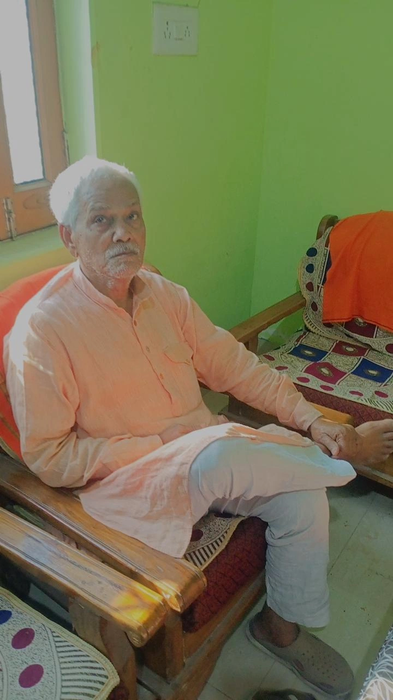
 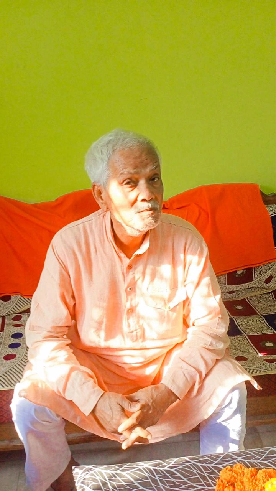
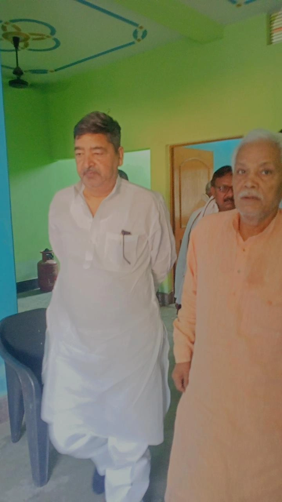
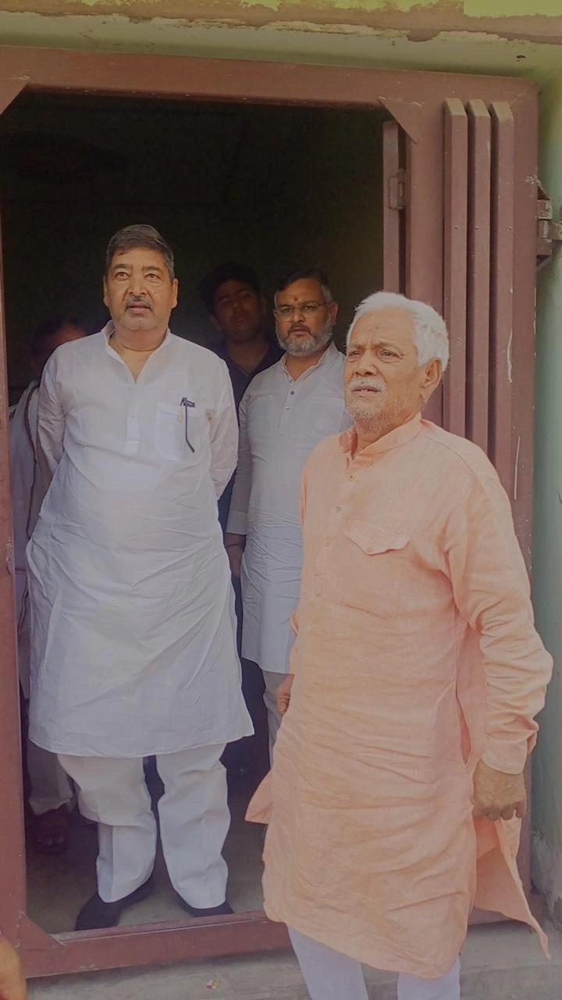
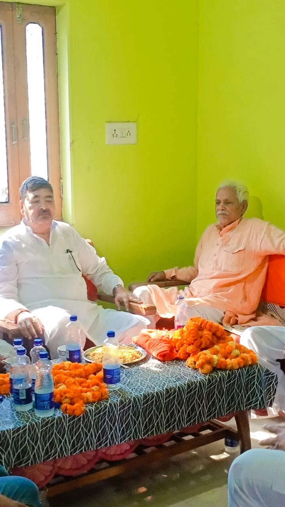
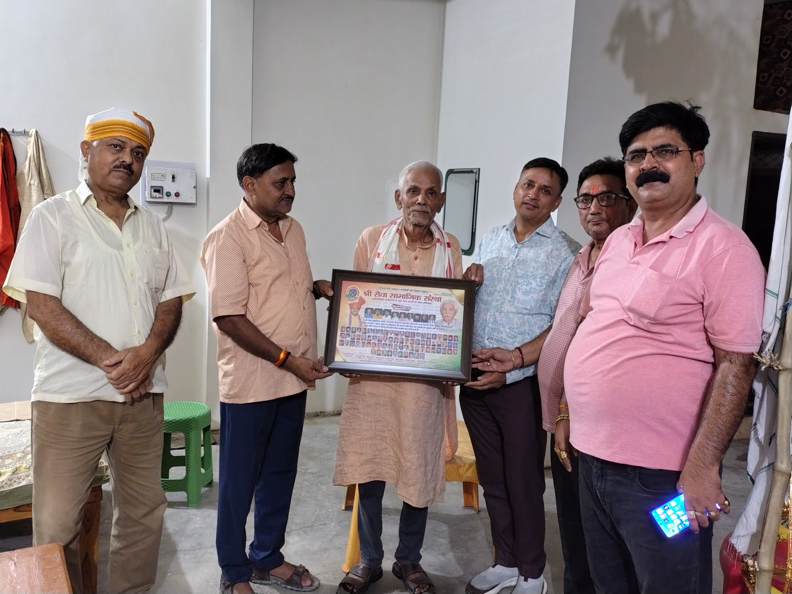
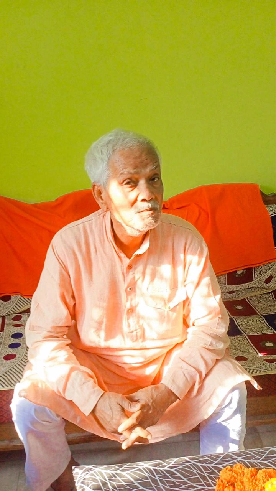
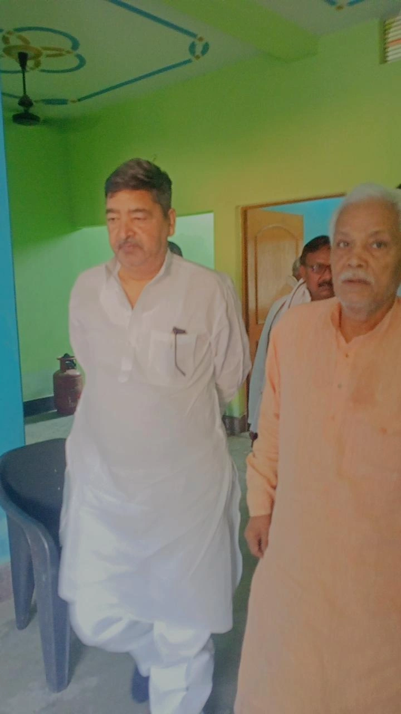
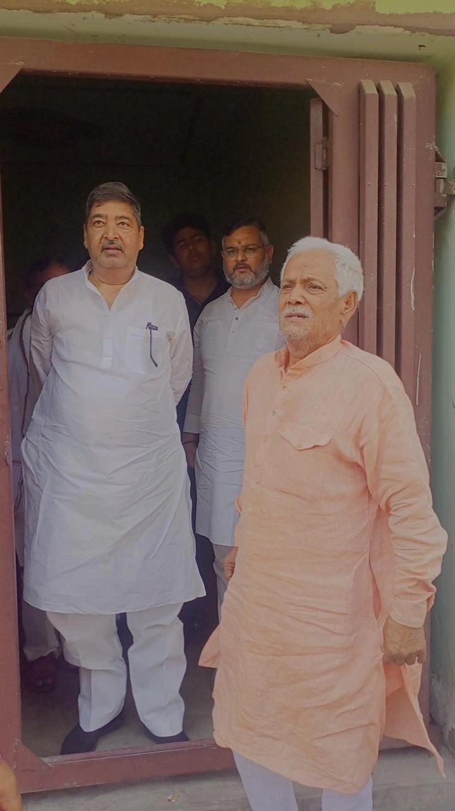
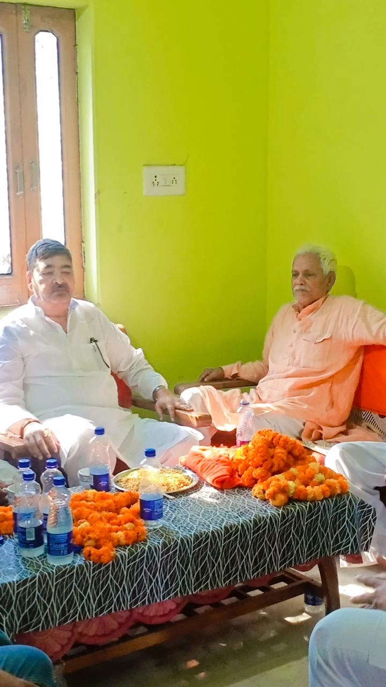
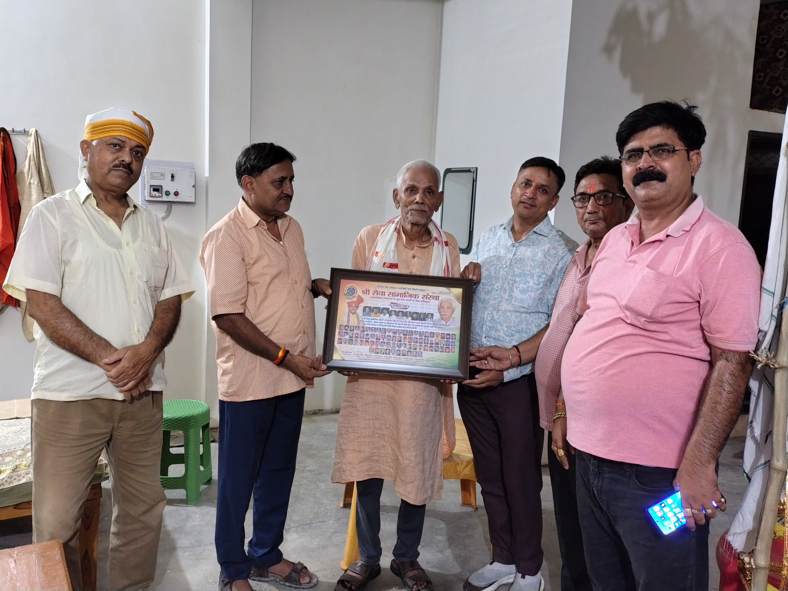


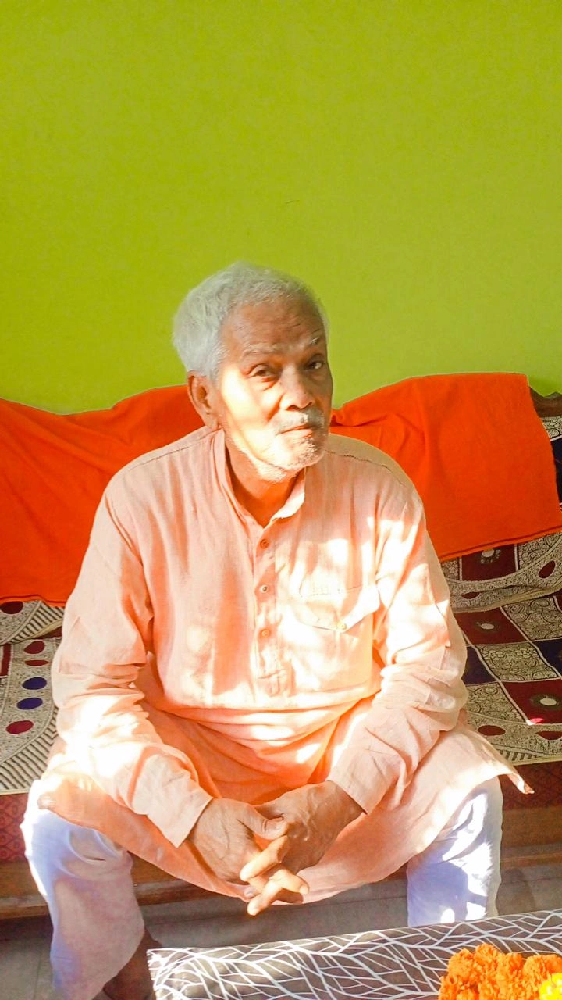
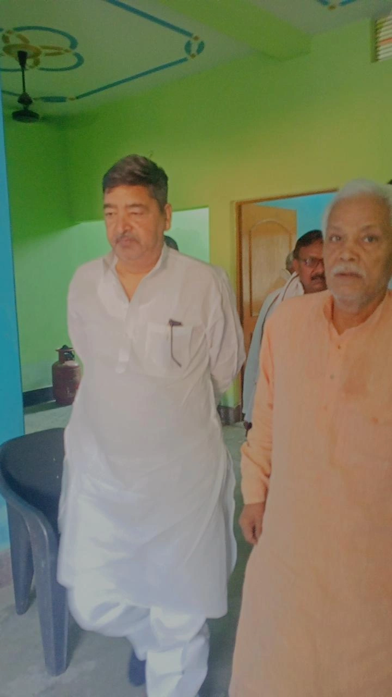
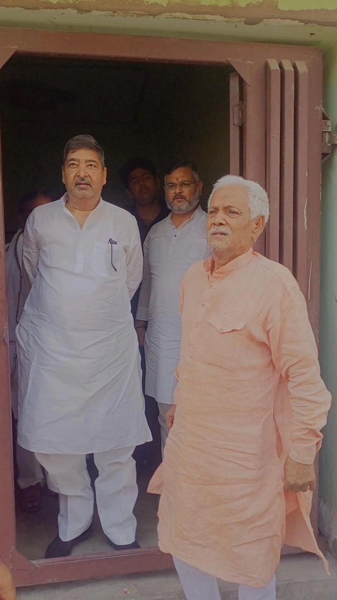
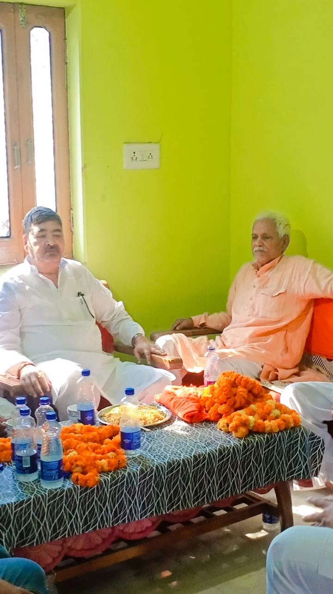
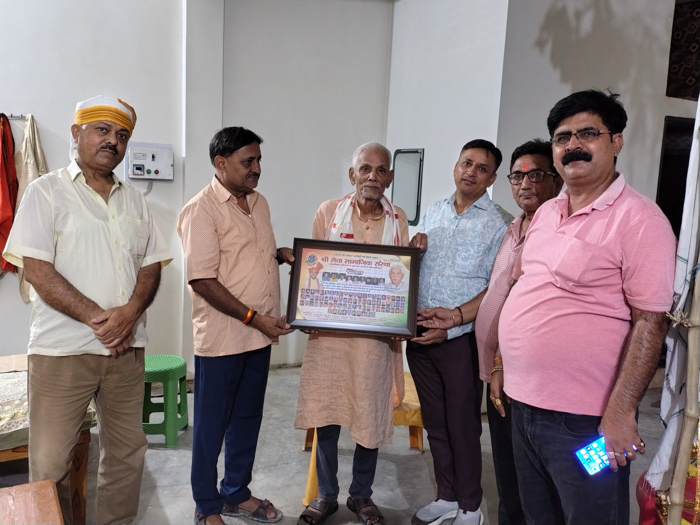